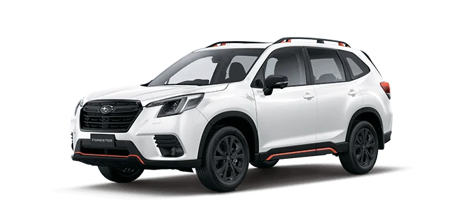

Our Cars
Choose from our reliable AWD Subaru Crosstrek, Subaru Forester, and Toyota RAV4 models, perfect for exploring Kutaisi and Georgia’s diverse landscapes. All vehicles are fully insured and maintained for your safety and comfort.
Subaru Crosstrek 2020 - 2023
Featuring a 2.0L petrol engine, automatic transmission, and Subaru’s symmetrical All-Wheel Drive (AWD), the Crosstrek offers stability on all terrains. Fuel efficiency ranges from 6.9–7.8 L/100 km, depending on driving conditions. Fully insured for your peace of mind.
- $50 per day for 1–2 day rentals
- $45 per day for 3+ day rentals

Subaru Forester 2020 - 2023
Equipped with a 2.5L petrol engine, automatic transmission, and Subaru’s renowned AWD system, the Forester is ideal for mountains, cities, and beyond. Fuel efficiency is 7.4–8.2 L/100 km, based on conditions. Includes comprehensive insurance.
- $60 per day for 1–2 day rentals
- $55 per day for 3+ day rentals
Toyota RAV4 2022
Featuring a 2.5L petrol engine, automatic transmission, and Toyota’s proven All-Wheel Drive system, the RAV4 offers a spacious cabin and a smooth ride for families and longer journeys. Fuel efficiency ranges from 7.5–8.5 L/100 km, depending on driving conditions. Fully insured for your peace of mind.
- $70 per day for 1–2 day rentals
- $65 per day for 3+ day rentals